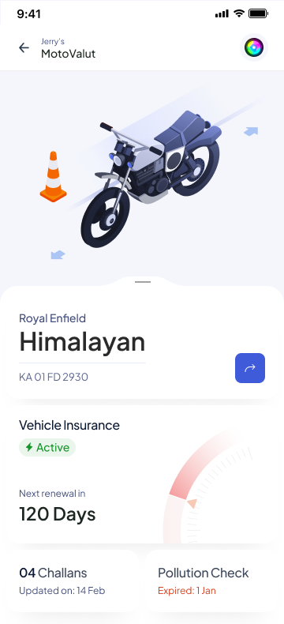
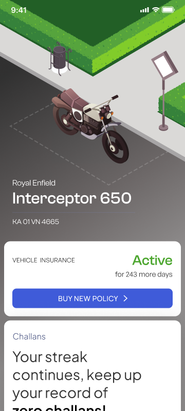

Three directions, one feature set.
The closest sibling to the final direction.
A motion pass that treats the vehicle as the stage and lets the rest of the app reveal beneath it. This is the study that convinced me the immersive route in the hero was the one worth taking forward, everything below sits alongside it as the range that got me there.

Illustration on top, sheet below.
Splits the screen into a light illustrative header and a soft-white sheet holding the modules. Warmer and friendlier than the immersive route, more personality than the utility one. Explored across two layout variants that shared the same DNA.

Cards, gauges, and cashless garages.
A familiar utility layout, renewal as a gauge, challans as a card, digilocker as a stack. Scannable, closer to a banking-app mental model. Also tried in dark mode. Kept as a control point; the immersive route said more.